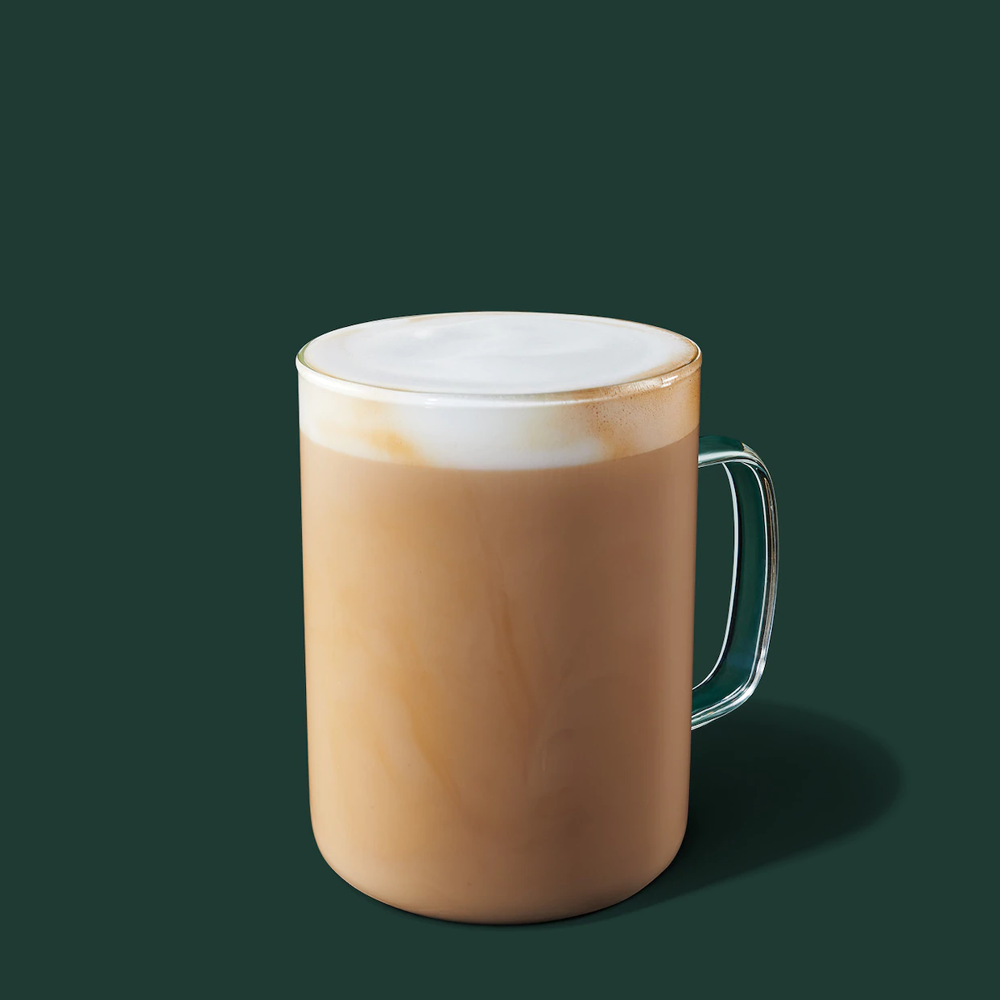
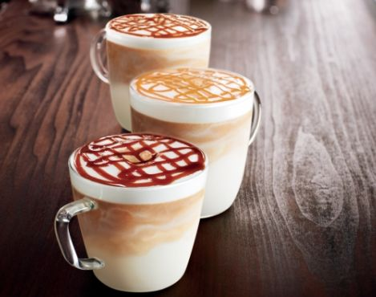
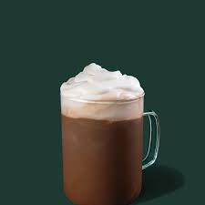
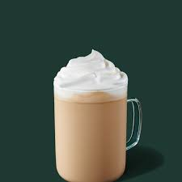

Latte

A latte is an espresso beverage that contains espresso
as a bottom layer, and milk to the top.
Macchiato

A macchiato is an espresso beverage that contains
espresso as a top layer, and milk on tthe bottom.
Mocha

A mocha is an espresso beverage that contains espresso
as a bottom layer, mixed with mocha syrup (chocolate)
and milk on the top with whipped cream (optional).
White Mocha

A mocha is an espresso beverage that contains espresso
as a bottom layer, mixed with white mocha syrup
(white chocolate) and milk on the top with whipped cream (optional).